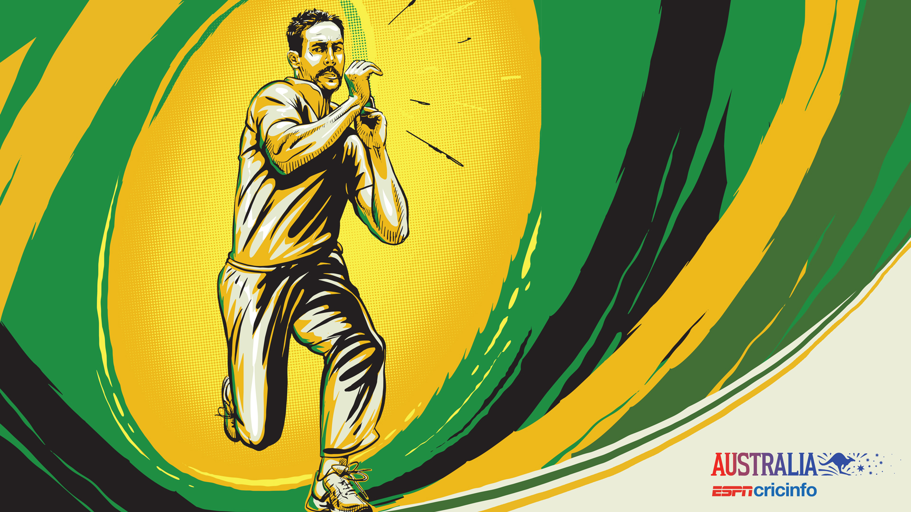

Supporting Australian Cricket Team
The Australia national cricket team represents the country of Australia in international cricket.
It is the joint oldest team in Test cricket history, having played in the first ever Test match in 1877.
The team also plays One Day International cricket and Twenty20 International, participating in both the first ODI,
against England in the 1970-71 season and the first Twenty20 International, against New Zealand in the 2004-05 season,
winning both games. The team draws its players from teams playing in the Australian domestic competitions -
the Sheffield Shield, the Australian domestic limited-overs cricket tournament and the Big Bash League.
The national team has played 811 Test matches, winning 383, losing 218, drawing 208 and tying 2.
Australia is ranked the number-one team overall in Test cricket in terms of overall wins, win-loss ratio
and wins percentage. As of 3 April 2017, Australia is ranked fourth in the ICC Test Championship on 102 rating points.
The Australian cricket team has played 911 ODI matches, winning 556, losing 312, tying 9 and with 34 ending in no-result.
They are currently placed fifth in the ICC ODI Championship, though have been ranked first for 141 of 185 months since its
introduction in 2002. Australia have made a record seven World Cup final appearances (1975, 1987, 1996, 1999, 2003, 2007 and 2015)
and have won the World Cup a record five times in total; 1987, 1999, 2003, 2007 and 2015. Australia is the first team to appear in four
consecutive World Cup finals (1996, 1999, 2003 and 2007), surpassing the old record of three consecutive World Cup appearances by
West Indies (1975, 1979 and 1983) and the first team to win 3 consecutive world cups (1999, 2003 and 2007). It is also the second team
to win a World Cup (2015) on home soil, after India (2011).
